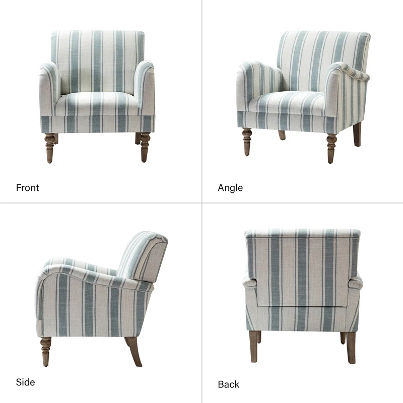
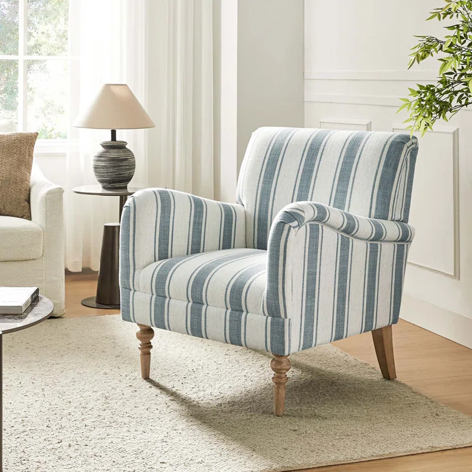

Zoe's Furniture
Arching Upholstered Armchair
SKU: W004536601
This accent chair delivers a retro silhouette paired with some coastal flair to your living room or den - and is sure to become a favorite reading or movie-watching chair. It has a frame made from kiln-dried solid and engineered wood and stands on turned legs in a wood tone. Integrated pocket springs provide support and help prevent sagging over time. What's more, the slightly slanted back and flared arms lend a stylish look while providing comfort. Striped upholstery (which we love for its beachy look!) wraps around comfy foam cushioning. Partner this armchair with a floor lamp to shed a little light on your book of the moment.
 
Features
- Product Including One (1) accent armchair, assembly required
- Contemporary and Classic Style:
This living room accent chair with 100% polyester fabric material, giving you a sense of comfort and is suitable for all kinds of living room decoration. - Material:
Founded atop a sturdy solid and manufactured wood frame, it is upholstered in 100% polyester fabric, and filled with high-density foam for comfort.
Not included
- Ottoman
- Toss Pillows